3시드 본학습·전체평가 완료 · 내부검증 범위FEM 자계 분포를 배우는 대리모델
형상과 운전 조건을 주면 위치별 Bx·By를 예측하고, 같은 공극 연산자로 토크까지 비교합니다.
목표: 전체 자계 오차를 줄이면서 공극·구리·고위상각(PA≥70) 조건의 정확도를 지키기.
폭128 본학습 최종 결과
W128이 사전등록 내부검증 개선 기준을 통과했습니다.
고정시드17·29·43을 모두 완료했습니다. 각88,565회 갱신과32조건×45위상=1,440개 최종평가, 총265,695회 갱신·4,320개 평가입니다. 폭 외의 그래프·정답·손실·깊이·순서·학습률은 고정했습니다.
범위는 oldTRAIN 노출 이력이 있는 내부dev32입니다. 독립test·AC손실·물리 축토크·cross-solver 개선의 검증이 아닙니다. 원천 BC·벡터basis·회전자–고정자 nativepair는UNKNOWN으로 남습니다.
| 오차 nRMSE | W64/w1 평균 [최소–최대] | W128/w1 평균 [최소–최대] | 후보−기준 [pp] |
|---|
| 전체 Bx/By | 12.165% [11.796–12.381] | 9.797% [9.412–10.123] | -2.368 |
| 공극 a1 | 34.819% [32.682–38.968] | 27.608% [24.279–29.287] | -7.211 |
| 구리 | 24.469% [23.199–26.928] | 17.701% [16.088–19.495] | -6.768 |
| 과거9위상 subset | 12.247% [11.891–12.444] | 9.867% [9.488–10.185] | -2.380 |
| PA≥70 case 평균 | 22.850% [22.125–23.323] | 18.484% [17.394–19.412] | -4.366 |
| 같은a1 Arkkio 토크 | 16.230% [16.096–16.301] | 11.853% [11.213–12.205] | -4.376 |
표는 반올림 표시이며 판정은 저장 원수치로 수행했습니다. 범위는3시드 최소–최대이며 신뢰구간이나 유의성 검정이 아닙니다.
전체 B벡터 평균 개선은 +2.368217pp입니다. 채택은 다음 사전등록 기준의 동시 통과로 판정합니다.
| 전체 자계 기준 | 결과 |
|---|
| 평균 개선≥1pp | PASS |
| 평균 개선>2×두 모델 중 큰 시드범위 | PASS |
| 평균 개선>2×고정 W64 시드범위 | PASS |
| 악화 제한 | 허용 [pp] | 실제 후보−기준 [pp] | 결과 |
|---|
| 과거9위상 subset | ≤0.5 | -2.380019 | PASS |
| 공극 a1 | ≤1 | -7.210800 | PASS |
| 구리 | ≤1 | -6.767771 | PASS |
| PA≥70 case 평균 | ≤1 | -4.365993 | PASS |
| 같은a1 Arkkio 토크 | ≤1 | -4.376186 | PASS |
시드별 결과 전부 보기
| 지표 | 모델 | seed17 | seed29 | seed43 | 평균 | 범위 |
|---|
| 전체 Bx/By [%] | W64/w1 | 11.796041 | 12.317756 | 12.380871 | 12.164889 | 0.584830 |
| 전체 Bx/By [%] | W128/w1 | 9.855497 | 10.122539 | 9.411982 | 9.796673 | 0.710557 |
| 공극 a1 [%] | W64/w1 | 32.807737 | 32.681717 | 38.968446 | 34.819300 | 6.286729 |
| 공극 a1 [%] | W128/w1 | 29.286902 | 29.259783 | 24.278814 | 27.608500 | 5.008087 |
| 구리 [%] | W64/w1 | 23.278469 | 23.199288 | 26.928021 | 24.468592 | 3.728733 |
| 구리 [%] | W128/w1 | 19.495246 | 16.087838 | 17.519381 | 17.700821 | 3.407408 |
| 과거9위상 subset [%] | W64/w1 | 11.890741 | 12.405020 | 12.444341 | 12.246701 | 0.553599 |
| 과거9위상 subset [%] | W128/w1 | 9.926616 | 10.185394 | 9.488034 | 9.866681 | 0.697360 |
| PA≥70 case 평균 [%] | W64/w1 | 22.125360 | 23.101883 | 23.323091 | 22.850111 | 1.197731 |
| PA≥70 case 평균 [%] | W128/w1 | 18.645738 | 19.412313 | 17.394304 | 18.484119 | 2.018010 |
| 같은a1 Arkkio 토크 [%] | W64/w1 | 16.291116 | 16.301437 | 16.096093 | 16.229549 | 0.205344 |
| 같은a1 Arkkio 토크 [%] | W128/w1 | 12.205446 | 11.213430 | 12.141213 | 11.853363 | 0.992015 |
703개 저장 진단·원수치·고정 판정 · Astra Max 최종 과학 검토
학습·시드·위상·토크 비교
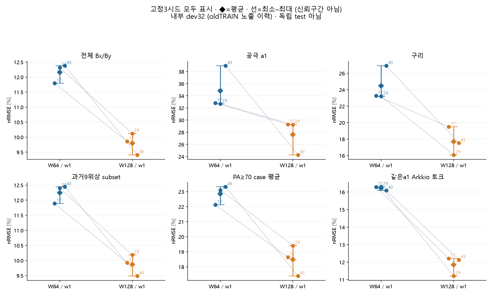
모든3시드와 평균·최소–최대. 좋은 시드만 고르지 않았습니다.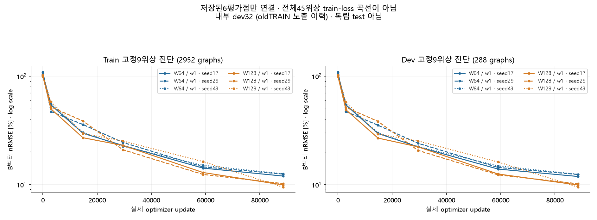
저장된6개 평가점입니다. train2952/dev288의 고정9위상 진단이며 전체45위상 train-loss 곡선이 아닙니다.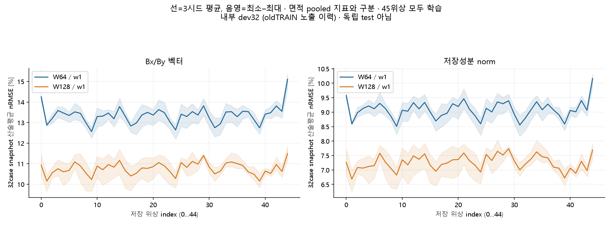
각 저장위상의32case snapshot 산술평균이며 면적 pooled 지표와 다릅니다. 두 모델 모두45위상을 학습했습니다.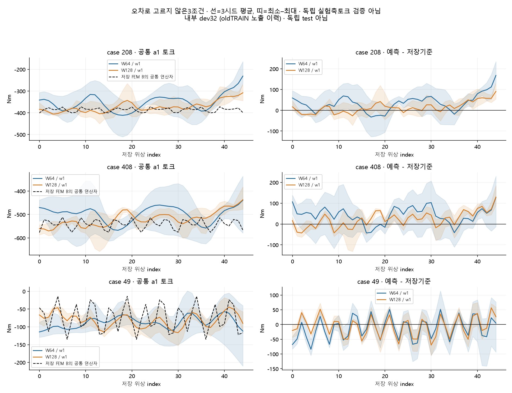
점수 전에 고정한3조건의45개 표본. 같은 a1 연산자 결과이며 독립 측정 축토크의 검증이 아닙니다.
왜 이 실험을 하나요?
이전 실험에서 공극을 더 중요하게 학습시키자 공극·토크 평균 오차는 줄었지만 전체 자계 오차가 늘었습니다. 따라서 공극 가중치 1배를 기준으로 유지하고, 이번에는 Astra Max 검토를 거쳐 변경 축 하나를 고정합니다.
성공 기준은 후보 결과를 보기 전에 등록합니다. 세 시드의 전체 B벡터 오차 평균이 충분히 감소하고, 기존 위상·공극·구리·고위상각·토크의 악화 제한도 모두 통과해야 채택합니다.
폭128의고정3시드 학습·전체평가·최종체크포인트 컨투어를완료했습니다. 판정과원수치는아래 최종결과에서 확인할수있습니다. 주기·공극 물리연결은보류합니다.
폭을 늘리는 실험의 의미
이번에는 같은 그래프에서 폭64→128만 바꿉니다. 각 메시지의 표현 크기를 늘리지만 depth3과 연결은 유지하므로 새로운 공극 대응점을 추가하거나 연결 단계를 늘리지는 않습니다. 정확도와 영역별 악화 여부는 세 시드의 최종 결과로 판단합니다.
전체 파라미터는273,478→1,079,430개이며 같은88,565회 갱신도 계산비용이 같다는 뜻은 아닙니다. 실제 작업 시간은 결과와 함께 별도로 기록합니다.
실제로 배우는 흐름
① FEM 자료
형상·운전점과 유효 자계 정답
② Native 요소 그래프
원래 요소 ID와 공유 메시 연결, 재료·좌표
③ Message passing
인접 요소 정보를 학습한 함수로 주고받기
④ 위치별 예측
각 유효 요소의 Bx·By [T]
⑤ 공통 평가
전체·영역 오차와 a1 Arkkio 토크
현재 구현은 유효 요소의 native 연결과 형상/운전점 조건을 사용합니다. 주기 seam과 회전자–고정자 연결 보강은 검토 중이며 현재 구현의 검증된 장점으로 포함하지 않습니다.
고정 시드 17·29·43이란?
시드는 난수 생성기의 출발 번호입니다. 초기 가중치와 데이터 shuffle 같은 무작위 선택을 기록된 규칙으로 다시 만들기 위해 사용합니다. 같은 시드끼리 기준·후보를 비교하면 우연한 출발 차이를 살피는 데 도움이 됩니다.
구조가 달라지면 난수를 소비하는 순서와 가중치 크기도 달라질 수 있습니다. 같은 시드가 다른 구조·장비에서 같은 가중치나 완전히 같은 결과를 보장하지 않습니다. 그래서 좋은 시드 하나를 고르지 않고 세 시드의 평균·최소·최대·범위를 모두 봅니다. 이 범위는 신뢰구간이 아닙니다.
컨투어 예시는 시드 17로 사전 지정합니다. 점수가 가장 좋아서 선택하는 것이 아닙니다. 조건 3개와 위상 0/11/22/33도 새 후보 점수를 보기 전에 metadata로 고정합니다.
이미 완료된 실험이 알려준 것
동일 W64·전체 45위상에서 공극 가중치만 1배→3배로 바꾼 고정 3시드 내부검증 평균입니다. 오차는 작을수록 좋고, 마지막 열은 3배−1배입니다.
| nRMSE | 기준 w1 | 공극 w3 | 변화 |
|---|
| 전체 Bx/By | 12.165% | 13.110% | +0.945 pp |
| 공극 a1 | 34.819% | 31.322% | -3.497 pp |
| 구리 | 24.469% | 25.377% | +0.909 pp |
| Arkkio 토크 | 16.230% | 13.785% | -2.445 pp |
판정: w3 미채택. 전체 자계 우선 기준과 기존 9위상·PA≥70 악화 제한을 통과하지 못했습니다. 본학습 완료·검증된 음성 결과이며 학습 미완료를 뜻하지 않습니다.
여기서 전체45위상은 각 조건에 저장된45개 표본을 뜻합니다. 실제360도 범위나 공간·시간 주기 경계를 검증했다는 뜻은 아닙니다.
두 모델 모두 45위상을 학습했습니다. seen9/unused36은 과거 위상 subset 이름이며 이번 학습의 미학습 위상 일반화로 해석하지 않습니다.
이 전략이 FEM 대리모델에 주는 이점
메시 연결을 사용하는 그래프는 인접 영역의 정보를 공유하고, 요소 수가 다른 형상을 처리할 수 있는 표현을 제공합니다. 위치별 자계를 출력하므로 어느 재료·각도·영역에서 오차가 큰지 컨투어로 확인할 수 있습니다. 예측한 같은 B에서 공통 연산자를 적용하면 영역 오차와 토크를 일관된 기준으로 비교할 수 있습니다.
반복 설계 탐색에서 검증된 범위의 추론이 FEM 재해석을 줄일 가능성이 있습니다. 다만 FEM 학습자료 생성비용·모델 학습비용·실제 추론비용은 별개입니다. 이 보고서는 측정되지 않은 FEM 대비 배속을 주장하지 않습니다. B²는 공간 진단이며 AC 손실 검증을 대체하지 않습니다.
공극에서 두 물체의 메시가 분리되면 단순 국소 전달만으로 반대편 정보를 얻기 어렵습니다. 주기 경계도 잘린 영역의 대응과 벡터 회전·부호를 정확히 알아야 연결할 수 있습니다. 원천 경계·좌표계 증거와 전 위상 coverage 검증이 필요한 이유입니다.
생성 당시 원천 자료 확인
234 PC의 private-source/Sim_4SolverX/DOE_Ext/case_0000에 모델·MES·원 TXT·조건 JSON이 남아 있습니다. 수집 코드가 원본 번호에40을 더해 현재 학습 case40으로 옮긴 경로를 추적했습니다. 원본 HDF와 현재 학습 HDF의 SHA-256이 완전히 같고 형상·전류·위상각·해석 시간도 연결됩니다.
실제 원 TXT ↔ HDF 전45위상 검사 PASS: a2를 제외한18,140개 요소의 ID·삼각형 연결·영역 코드, 모든 사용 노드 좌표가 저장 float32 정밀도 기준으로 일치했습니다. 누락/중복/좌표 불일치0, 제외a2는366개입니다. 원 헤더의 Bx/By[T],X/Y[mm] 및 저장 모델 RMS460A도 확인했습니다.
주기 경계 부호·native pair는 계속 UNKNOWN: 이 PASS는 한 사례의 원천 메시 정합성에 한정됩니다. 전체 corpus와 물리 경계 대응을 자동으로 승인하지 않습니다. 저장 모델의 symmetry factor8 같은 숫자만으로 부호나 대응을 추정하지 않습니다.
원 로그의 전압 제한 경고와 Emag 요약 결과 로딩 실패도 별도로 보존했습니다. 실제 보존된 자계 자료의 정합성 검사와 물리 수렴/운전점 적합성 판정은 구분합니다.
원천 회수·검증 기록
주기·공극 연결: 원천에서 확인한 현재 상태
사용자 우선순위에 따라 원천 pilot 검증을 먼저 완료했습니다. 이를 바탕으로 폭만 바꾸는 본학습을 완료했으며, 물리 경계 연결은 보류합니다. 아래는 원천 회수 이전에 확인한 코드 범위와 한계입니다.
원본234 PC의 exporter와 parser 8개 소스를 원문·SHA-256으로 확보했습니다. 현재 코드의 흐름은 mc.save_fea_data → TXT Nodes/Elements 표 → parser → HDF5입니다. 각 단계가 실제 case 생성 당시에도 이 버전이었는지는 별도의 생성 이력이 필요합니다.
| 확인 항목 | 현재 근거와 한계 |
|---|
| 좌표·Bx/By | 현재 parser는 각 block의 노드 좌표와 Bx/By를 직접 읽습니다. 별도 좌표 회전이나 B 성분 변환은 이 경로에서 하지 않습니다. 이는 코드 동작 확인이며 solver의 좌표계 선언을 대신하지 않습니다. |
| 누락 좌표 | HDF5 writer는 누락된 이동 좌표를 앞뒤 값으로 채울 수 있으나 fill mask를 저장하지 않습니다. 실제 case에서 보정이 일어났는지는 원 TXT와 대조해야 합니다. |
| 파일 계보 | case40의 metadata는 doe_data_120 경로를 가리키고 실제 admitted 파일은 doe_data_240에 있습니다. 두 HDF5의 SHA-256은 동일해 파일 신원은 확인됐습니다. |
| 경계 부호·native 대응 | HDF5 writer에서 명시적인 solver BC/sign/master–slave pair 저장을 확인하지 못했습니다. case120/240 폴더에는 meta.json과 HDF5만 있고 원 모델·MES·TXT는 없습니다. 경계 조건 검증은 아직 UNKNOWN입니다. |
| 기존 연결 후보 | 선언된 case40 no-wrap 접촉면 P0 후보의 전45위상 coverage FAIL은 유지합니다. 현재 field 자료 전체나 모든 연결 방식의 실패를 뜻하지 않습니다. |
잔여 확인은 같은 case에 묶인 solver의 실제 경계 할당·벡터 성분 좌표계·주기 부호, 생성 버전 이력과 정확한 native 대응입니다. 원 TXT의 좌표·단위 header 대조는 위의 case40 pilot에서 완료됐습니다. 이후 확인된 경계 자료로 전 위상 coverage와 벡터 변환을 검사해야 합니다.
Exporter 원천 검토 · API–parser–HDF 전체 경로 검토 · 원천 검증 우선 판정
실제 저장 FEM 기준·예측·오차 컨투어
아래는 실제 native 삼각형의 평탄 색상입니다. 각 그림을 누르면 원본 해상도로 볼 수 있습니다. 조건·시드17·위상0/11/22/33은 결과 확인 전에 고정했습니다.
Stored Bx/By [T]는±3T, 저장성분 norm은0–3T, 절대성분/벡터오차는0–1.5T의 공통 범위입니다. 범위 밖 요소 수는 각 패널에 표시하며 확대도 전체 retained 요소를 기준으로 집계합니다. 회색은제외/미지원 공간으로 실제 a2 polygon을 뜻하지 않습니다. smoothing·대칭복제·추정회전은 사용하지 않았습니다.
STORED_NATIVE_HDF_REPLAY_ONLY / source vector basis UNKNOWN. 원 TXT와 직접 메시를 대조한 사례는case40뿐입니다. 이 그림이 native BC·주기 부호·회전자–고정자 대응 또는 전체corpus의 물리 검증을 뜻하지 않습니다.
사전 지정 case 208
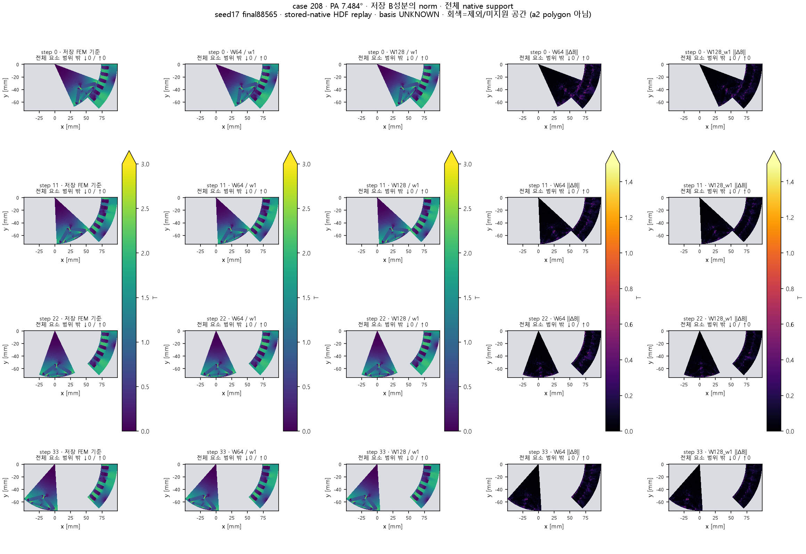
고정 seed17/final88565. FEM 기준·W64/w1·W128/w1과각 벡터오차를같은범위로 비교합니다.저장 Bx·By / a1 확대 / 과거 공극w3 비교 펼치기
같은 native support에서의 저장성분 비교입니다.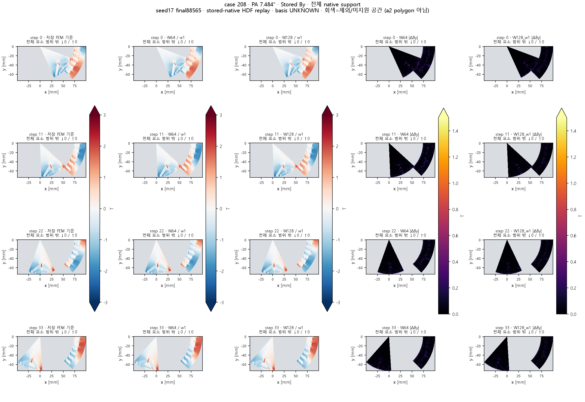
같은 native support에서의 저장성분 비교입니다.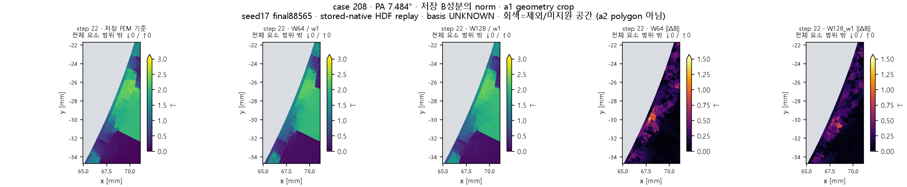
같은 native support에서의 저장성분 비교입니다. 확대는사전고정 step22의 geometry 기준 Cartesian crop이며 메시나색상범위를바꾸지 않았습니다.완료된 W64/w3 음성 실험의 별도 역사 비교입니다. 새 W128 후보와 혼동하지 않습니다.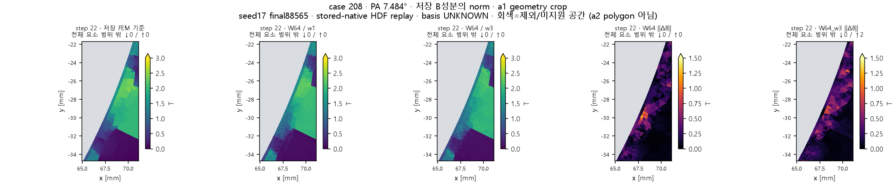
완료된 W64/w3 음성 실험의 별도 역사 비교입니다. 새 W128 후보와 혼동하지 않습니다. 확대는사전고정 step22의 geometry 기준 Cartesian crop이며 메시나색상범위를바꾸지 않았습니다.사전 지정 case 408
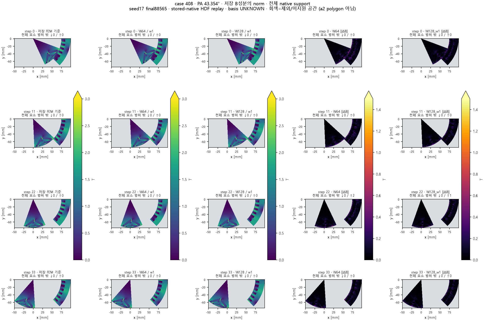
고정 seed17/final88565. FEM 기준·W64/w1·W128/w1과각 벡터오차를같은범위로 비교합니다.저장 Bx·By / a1 확대 / 과거 공극w3 비교 펼치기
같은 native support에서의 저장성분 비교입니다.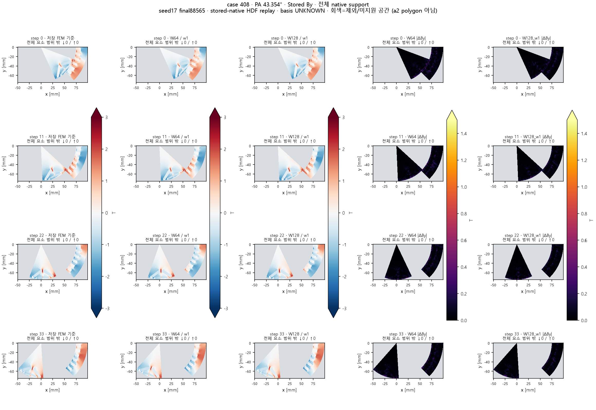
같은 native support에서의 저장성분 비교입니다.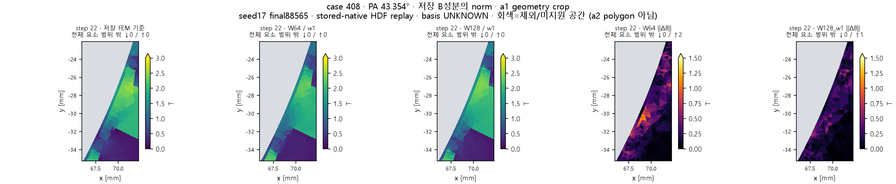
같은 native support에서의 저장성분 비교입니다. 확대는사전고정 step22의 geometry 기준 Cartesian crop이며 메시나색상범위를바꾸지 않았습니다.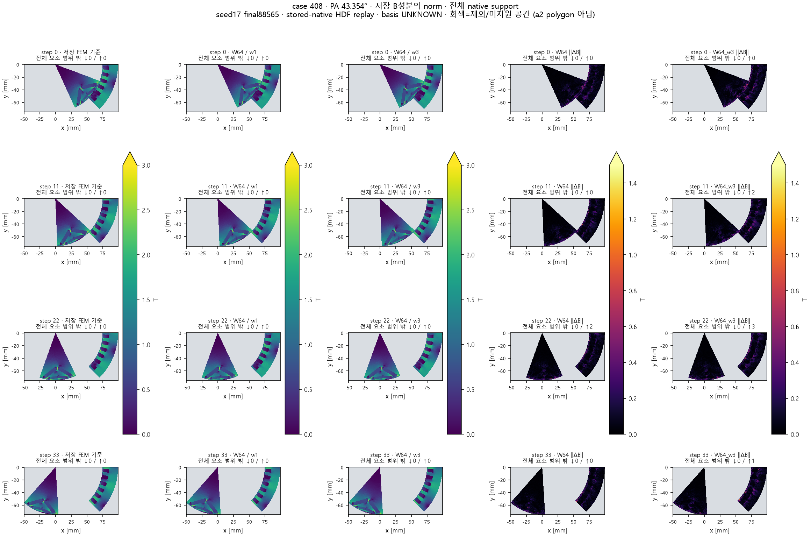
완료된 W64/w3 음성 실험의 별도 역사 비교입니다. 새 W128 후보와 혼동하지 않습니다.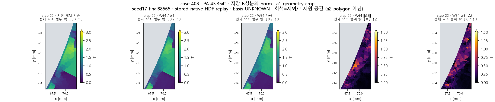
완료된 W64/w3 음성 실험의 별도 역사 비교입니다. 새 W128 후보와 혼동하지 않습니다. 확대는사전고정 step22의 geometry 기준 Cartesian crop이며 메시나색상범위를바꾸지 않았습니다.사전 지정 case 49
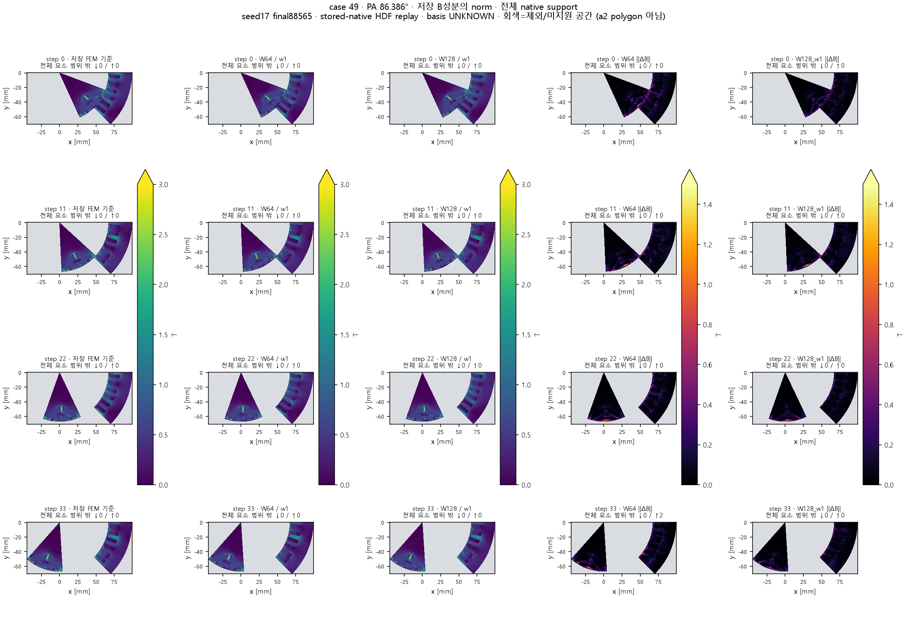
고정 seed17/final88565. FEM 기준·W64/w1·W128/w1과각 벡터오차를같은범위로 비교합니다.저장 Bx·By / a1 확대 / 과거 공극w3 비교 펼치기
같은 native support에서의 저장성분 비교입니다.같은 native support에서의 저장성분 비교입니다.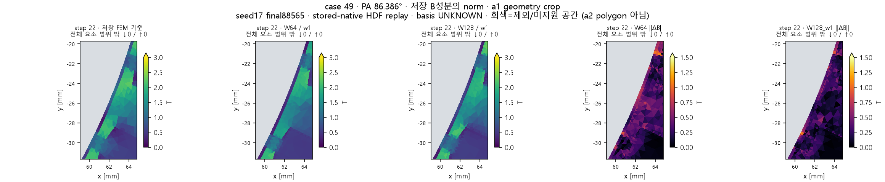
같은 native support에서의 저장성분 비교입니다. 확대는사전고정 step22의 geometry 기준 Cartesian crop이며 메시나색상범위를바꾸지 않았습니다.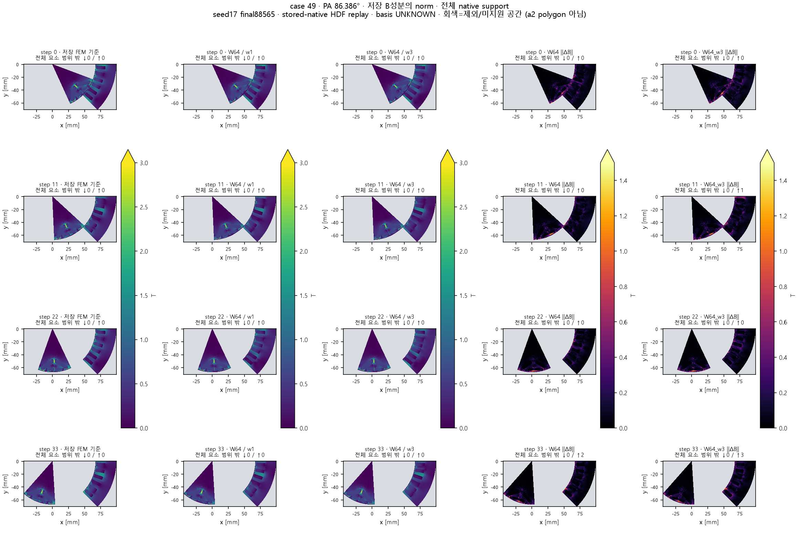
완료된 W64/w3 음성 실험의 별도 역사 비교입니다. 새 W128 후보와 혼동하지 않습니다.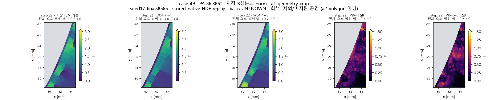
완료된 W64/w3 음성 실험의 별도 역사 비교입니다. 새 W128 후보와 혼동하지 않습니다. 확대는사전고정 step22의 geometry 기준 Cartesian crop이며 메시나색상범위를바꾸지 않았습니다.그림·클리핑 수·실제 수치 범위 기록
공극 밴드: 원천 메시와 저장 표현의 차이
원 TXT의 매 위상 a2 연결과 좌표를 그대로 사용하면 366개 삼각형 ×45위상의 16,470개가 모두 양의 방향을 유지했습니다. 반면 첫 위상의 연결을 고정하고 현재 좌표만 적용한 표현과 기존 HDF 표현에서는 각각 42개 위상에 음의 방향 삼각형이 나타났습니다. 이 한 사례에서 저장 연결을 고정한 방식이 국소 뒤집힘을 만드는 원인이라는 근거입니다.
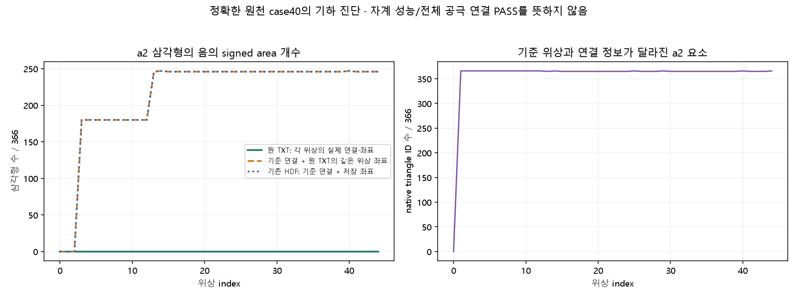
A: 실제 원천 위상별 연결 / B: 첫 위상 연결+현재 좌표 / C: HDF 고정 연결+저장 좌표. 기하 진단이며 자계 학습 결과가 아닙니다.물리 공극 연결은 계속 보류합니다. 원천 a2가 두 native 영역과 공유 변으로 접촉하는 것은 위상0–12에서만 확인됐고,13–44에서는 영역22만 확인됐습니다. 전 위상의 회전자–고정자 전달, 주기 부호와 native pair를 입증하지 못했습니다. a2 정답·면적을 학습에 복원하지 않습니다.
Astra Max 과학 검토
컨투어용 실제 메시 대조 완료
점수와 무관하게 지정한 case208·408·49와 위상0/11/22/33의 12개 저장 메시를 회수했습니다. 원 HDF의 native 요소 ID·삼각형 연결·영역·위상과 고정 평가 graph를 일대일로 결합했고, 공극 a1 마스크·기존 연산자의 좌표·면적도 일치했습니다. 전체 면적의 최대 상대 차이는5.95×10⁻⁸로 사전 지정 float32 허용오차4.77×10⁻⁷ 안입니다.
| 사전 지정 조건 | 위상당 유효 요소 | 대조한 위상 | 결과 |
|---|
| case208 · PA7.484° | 18,652 | 0/11/22/33 | 4/4 PASS |
| case408 · PA43.354° | 16,808 | 0/11/22/33 | 4/4 PASS |
| case49 · PA86.386° | 21,854 | 0/11/22/33 | 4/4 PASS |
위상0은 기존9위상 마스크 기록과 직접 대조했습니다.11/22/33은 고정된 a1 요소 ID와 해당 위상의 실제 graph로 마스크·면적 비율을 계산했습니다. 위상0의 면적이나 비율을 재사용하지 않았습니다.
범위: stored-native-HDF replay. 원 TXT 정합성을 검증한 사례는case40뿐입니다. 이12개 PASS가 native BC·좌표계·주기 부호·회전자–고정자 대응의 인증을 뜻하지 않습니다. 실제 최종 체크포인트 컨투어를 아래에 추가했습니다.
12개 메시·graph 대조 기록 · 결과 확인 전 고정한 공통 색상 범위와 확대 규칙
완료된 w1/w3 결과를 그림으로 읽기
아래 그림은 이미 완료된 가중치 실험의 저장 결과입니다. 새 후보 학습 결과가 아닙니다. 같은 시드끼리의 선은 비교를 돕고, 최솟값–최댓값 범위는 신뢰구간이 아닙니다.
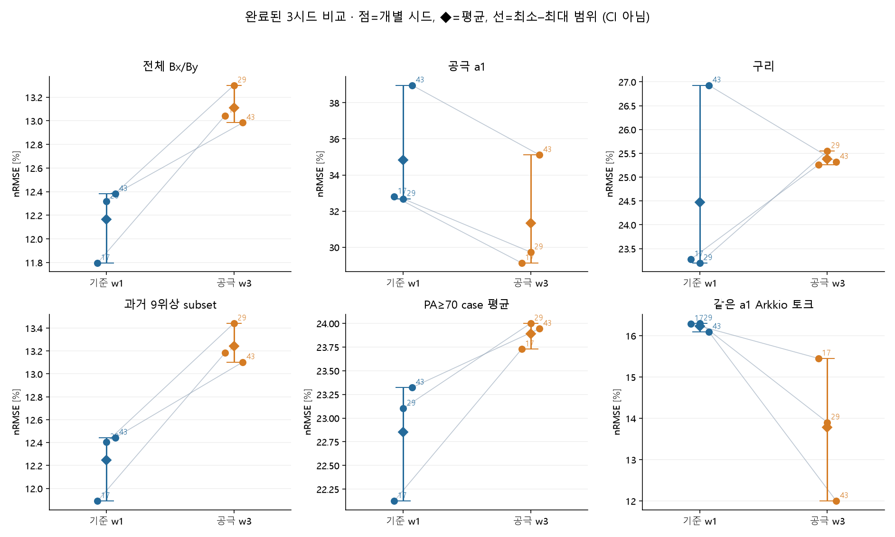
세 시드 모두 전체 자계 오차는 증가했고 공극 오차는 감소했습니다. 부분 개선과 전체 목표를 함께 보는 이유입니다.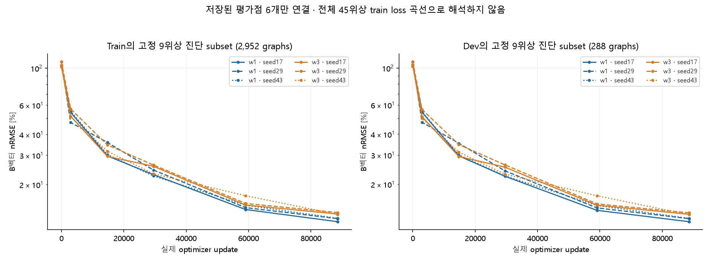
저장된 여섯 평가점만 표시했습니다. train/dev 모두 과거 9위상 진단 subset이며 전체 45위상 최종 평가는 별도로 수행됐습니다.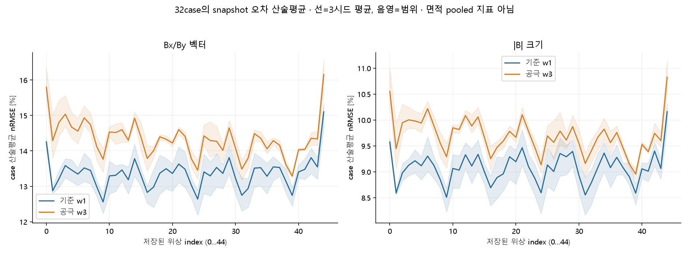
각 위상의32case snapshot 오차 산술평균입니다. 면적 pooled 결과와 통계 정의가 다릅니다.그림에 사용한 실제 수치
용어를 짧게 읽기
- Geometry group / 조건 / 위상 / graph
- 같은 기본 형상을 공유하는 묶음 / 전류·회전수 등 운전점 / 회전자 각도 표본 / 한 조건·위상의 요소와 연결 자료입니다. 요소나 위상이 많아져도 독립 형상 수가 그만큼 늘지는 않습니다.
- Train / dev
- 가중치를 학습하는 자료 / 학습 후 비교하는 내부검증 자료입니다. 현재 dev32는 oldTRAIN 노출 이력이 있는 내부검증이며 독립 최종시험이 아닙니다.
- Epoch / full pass / update
- 기록된 학습 loop 한 회 / 전체 선언된 학습 graph를 한 번 사용하는 것 / optimizer가 가중치를 한 번 갱신하는 것입니다. 위상 순환 방식에 따라 epoch와 full pass가 같지 않을 수 있어 실제 graph 수와 update를 함께 기록합니다.
- B벡터 오차 / |B| 오차
- Bx·By의 방향과 성분까지 비교 / √(Bx²+By²)의 크기만 비교합니다. 크기가 같아도 방향이 틀릴 수 있습니다.
- % / pp
- 오차율 12%→13%는 1 percentage point(pp) 증가이며, 상대 증가율은 약 8.3%입니다.
- Arkkio 토크
- 같은 유효 공극 영역의 B 성분으로 계산하는 공통 평가 연산자입니다. 실제 축 토크의 독립 실험 검증을 뜻하지 않습니다. Ripple은 조건별 파형의 최대−최소입니다.
계산 비용과 확인 범위
| 모델 / 시드 | 학습worker [분] | 최종평가worker [초] |
|---|
| W64/w1 / 17 | 43.44 | 116.94 |
| W64/w1 / 29 | 43.68 | 129.89 |
| W64/w1 / 43 | 43.34 | 116.52 |
| W128/w1 / 17 | 53.10 | 119.83 |
| W128/w1 / 29 | 53.16 | 119.98 |
| W128/w1 / 43 | 53.18 | 119.23 |
학습worker 시간에는저장된6회 진단 평가가포함됩니다. 프로세스 부팅·전송·최종보고 시간과구분하며 동일갱신 수가동일GPU비용을뜻하지 않습니다. FEM 대비 배속은 측정하지 않았습니다.
브라우저 보안정책이 로컬HTML 렌더링을차단하여 브라우저 화면은미검증입니다. 실제 standalonePNG 검토와해시·정적링크 검사결과를별도로 남겼습니다.